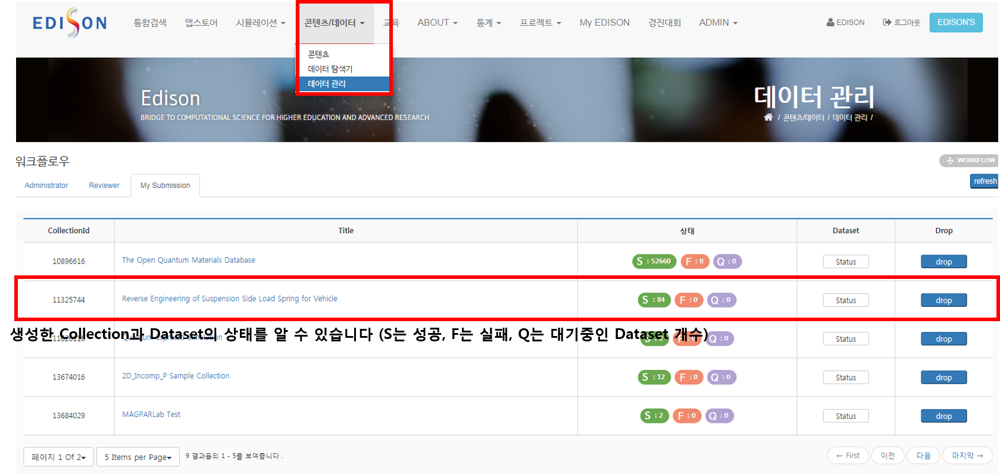
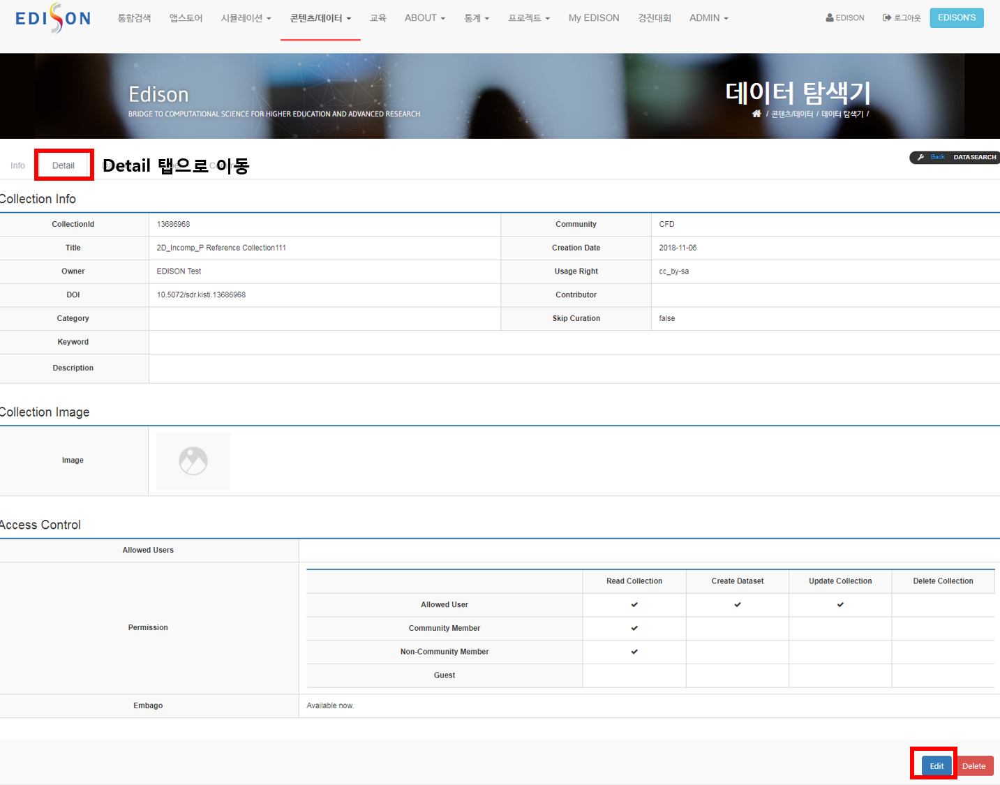
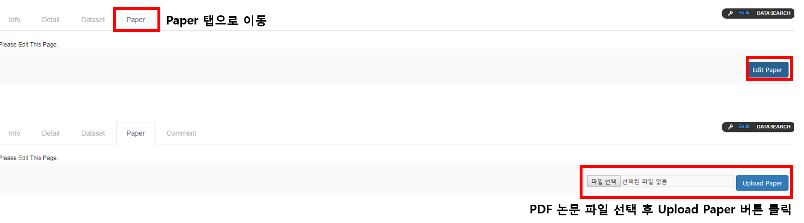

공유하는 과정은 공유할 시뮬레이션 선택 → Collection 생성 → 공유의 순서로 진행됩니다.
여러 시뮬레이션 결과 데이터들은 하나의 컬렉션을 통해 관리됩니다.
컬렉션은 데이터셋(시뮬레이션 결과 데이터)들의 집합이며 경진대회 팀마다 혹은 각 주제마다 하나씩 생성할 수 있습니다.
쉽게 생각하면 컬렉션은 여러 파일들을 담고 있는 디렉터리의 개념으로 볼 수 있습니다.
처음 시뮬레이션 결과 데이터를 공유하는 경우에는 먼저 컬렉션부터 생성하여야 합니다.
시뮬레이션 결과 데이터, 데이터셋, 컬렉션의 정의(개념)에 대해서는 다음 링크를 참조하십시오. 링크
내가 실행한 시뮬레이션 결과 데이터를 다른 사용자들과 공유하기 위한 과정은 다음과 같습니다.
로그인 후 My EDISON 메뉴로 이동합니다.
좌측의 시뮬레이션 파일 탭에서 다른 사용자와 공유를 원하는 시뮬레이션(Simulation) 혹은 작업(Job)을 선택합니다.
※ 시뮬레이션 실행 시 설정했던 [시뮬레이션 명- 잡 명]이 제목으로 자동 설정됩니다. 그러므로 시뮬레이션의 이름과 작업의 이름을 다른 것들과 충분히 구분할 수 있는 의미 있는 값 (예, 시뮬레이션 주제, 파라미터 값)으로 변경해주시길 바랍니다. 시뮬레이션과 작업 이름은 워크벤치 (Workbench)에서 변경이 가능합니다.
공유할 시뮬레이션 혹은 작업을 선택한 후, Register & Share Data 버튼을 누릅니다.
그러며 시뮬레이션 결과 데이터가 포함된 컬렉션(Collection)을 선택하라는 팝업이 뜹니다.
※ Simulation 목록에서 ‘Register & Share Data’ 버튼을 누르면 Simulation 하위의 성공적으로 종료된 모든 Job 들이 저장의 대상이 됩니다. 그리고 Job 목록에서 ‘Register & Share Data’ 버튼을 누르면 개별 Job이 저장의 대상이 됩니다.
Save process
최초 공유를 시도하는 경우라면 컬렉션(Collection)의 생성이 필요하며, 생성방법은 다음과 같습니다.
※ Collection 명은 논문 이름 혹은 주제 이름으로 하고, Community 명은 각 전문센터 이름으로 하면 됩니다.
전산열유체 → CFD
구조동역학 → CSD
계산화학 → CHEM
나노물리 → NANO
전산의학 → CMED
전산설계 → DESIGN
도시환경 → UE
Collection popupCollection detail info
Collection 생성을 완료하고, 해당 Collection의 Choose 버튼을 누르면 공유가 진행됩니다.
성공적으로 공유가 완료되면 다음 그림과 같은 메시지가 뜰 것입니다.
Save success
한번 컬렉션을 생성한 이후에는 다른 데이터셋(시뮬레이션 결과 데이터)를 공유하기 위해 기존의 컬렉션을 선택하여 활용할 수 있습니다.
공유된 데이터셋 상태 보기
사용자가 데이터셋 공유를 요청하면 EDISON 플랫폼은 자동으로 데이터 처리과정을 수행합니다.
처리할 데이터셋의 수가 많거나 여러 사용자가 동시에 이용하는 경우 데이터 처리과정은 순차적으로 수행됩니다.
데이터에 따라 처리과정이 무사히 완료되는 경우도 있고 실패하는 경우도 있습니다.
내가 공유한 데이터가 올바르게 처리과정을 완료하였는지를 확인하는 방법은 다음과 같습니다.
콘텐츠/데이터 - 데이터 관리 메뉴로 이동합니다.
Data Management
처리과정 조회를 원하는 데이터셋이 포함된 컬렉션의 Manage 버튼을 누릅니다.
자신이 공유한 데이터셋들의 상태를 확인합니다. 성공(S), 실패(F), 대기(Q)
Dataset Detail
Collection 썸네일 이미지 등록
해당 Collection을 대표할 수 있는 썸네일 이미지를 등록합니다.
다음 그림과 같이 Collection 페이지에서 Detail 탭으로 이동합니다. Edit 버튼을 누르면 대표 이미지를 업로드할 수 있는 페이지로 이동합니다.
여기서 대표 이미지를 업로드해주시고 Save 버튼을 통해 저장해주시기 바랍니다.
Move to detail tabThumbnail upload
Colection 논문 등록
저장한 시뮬레이션 결과들로부터 도출된 논문이 있다면 해당 논문을 등록합니다.
논문은 PDF 형식만 업로드 가능합니다. 논문 등록 절차는 다음 그림과 같이 Collection 페이지에서 Paper 탭으로 이동한 후 Edit Paper 버튼을 누르고 파일 선택 버튼을 눌러 논문을 선택합니다.
논문이 선택되면 Upload Paper 버튼을 눌러 논문을 업로드합니다.
Paper upload
Collection 설명 페이지 등록
Collection은 어떤 주제에 대한 시뮬레이션들의 집합체를 의미합니다.
따라서 시뮬레이션들이 어떤 문제를 해결하고자 하였는지에 대한 설명이 Collection 메인 페이지에 나와 있었으면 합니다.
예를 들면, 경진대회에 제출한 논문의 내용을 적어주셔도 됩니다. 그럼 Collection을 디자인하는 방법에 대해서 설명드리겠습니다.
데이터 관리 메뉴에서 생성한 Collection의 Title을 클릭하면 생성한 Collection 페이지로 이동합니다. 해당 페이지에서 Info 탭으로 이동하면 Collection을 처음 생성했기 때문에 빈 페이지일 것입니다. 여기서 Edit Description 버튼을 눌러 수정 페이지로 이동합니다.
Move to Info tab
수정 페이지로 이동한 후, 다음 그림과 같이 페이지를 꾸며주시면 됩니다. 일반적인 문서 작업처럼 텍스트, 이미지, 테이블, 링크 등을 활용하실 수 있습니다. 그리고 페이지 작성 중 틈틈이 저장하시기를 추천드립니다.